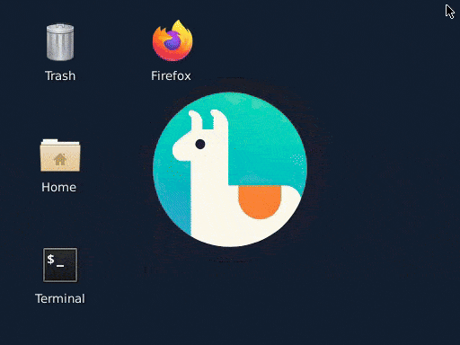
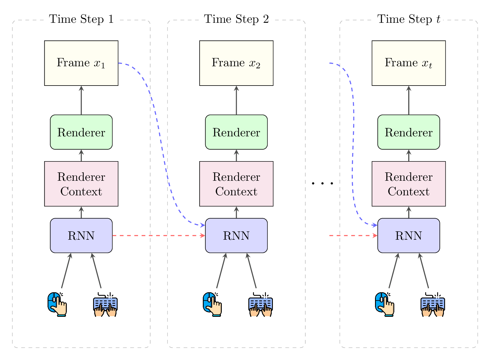
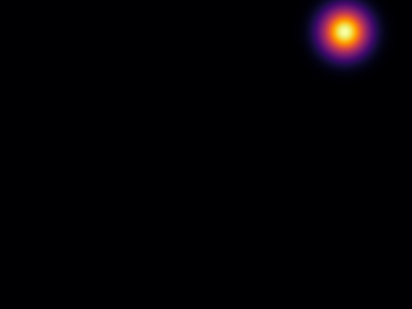
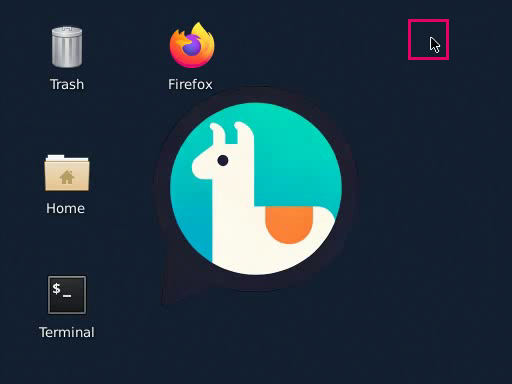
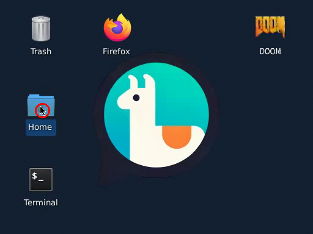
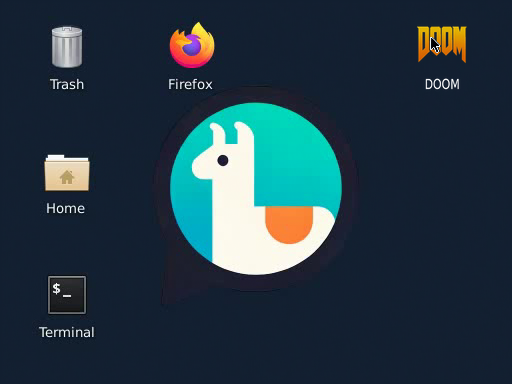
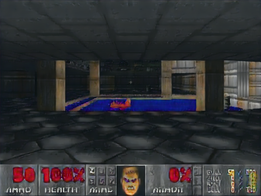
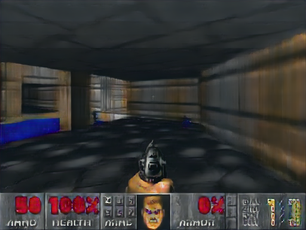
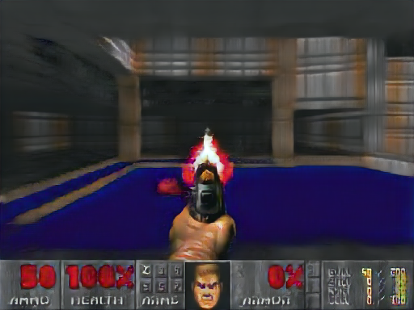
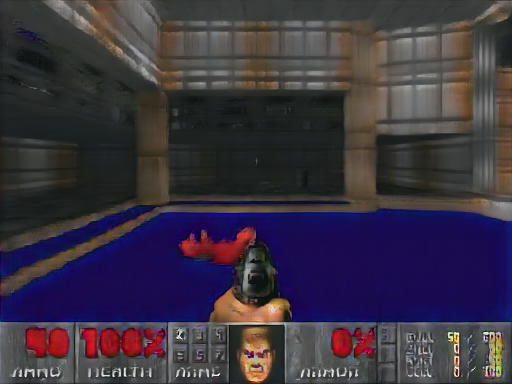

What if an OS was entirely neural?
Every pixel generated by a neural network. No kernel. No applications. Just weights.
The Next Interface Paradigm
“Chatting” with LLM feels like using an 80s computer terminal. The GUI hasn't been invented yet, but some properties of it can start to be predicted.
What if the entire interface could be generated by a neural network?
From Game Simulation to OS Simulation
and simulate an entire OS?
Why Simulate an OS?
The same reason self-driving cars learn in simulators.
You don't stage a real crash to teach a car to avoid one.
You don't drain a real bank account to teach an agent to transfer money.
Learn interfaces from demonstrations — no real OS, accounts, or money at risk.
OS as Autoregressive Generation

Not a fixed clip — responds to every user action, forever.
High-Level Architecture

RNN tracks the OS state — like a kernel (constant memory at any sequence length)
Diffusion Renderer generates the screen frame — like a desktop manager
A Detail That Stalled Us for Months
Everything rendered well — except the cursor.
The fix: encode (x, y) as a Gaussian spatial map — an extra input channel.


without map
with Gaussian map
Data Collection
64 Docker containers · Ubuntu XFCE · 512×384 · 15 fps → 12 TB
Why Random Exploration?
Agent-only data led to spurious correlations:
Agent always clicks after hovering → model learns "hover = close."
Random exploration adds hover-without-click counterexamples.
Training in a Nutshell
Naïve end-to-end training fails — a multi-stage pipeline is essential.
Does It Work?
NeuralOS in Action
Double-click "Home" folder → file manager opens → close it


Synthetic Demonstrations: Setup
Doom was never installed — we fabricated training data in two steps:


Synthetic Demonstrations: Result
NeuralOS learns to launch and play Doom — from fabricated data alone

More generated gameplay frames:




Interactive Demo

Key Takeaways
Long-term state with constant memory
Doom learned from fabricated data
Progress: 2024 → 2026
Shown at proportional sizes. Resolution ×4 in 18 months.
Thank You!
Demo: neural-os.com · Code: github.com/yuntian-group/neural-os
Paper: arXiv:2507.08800